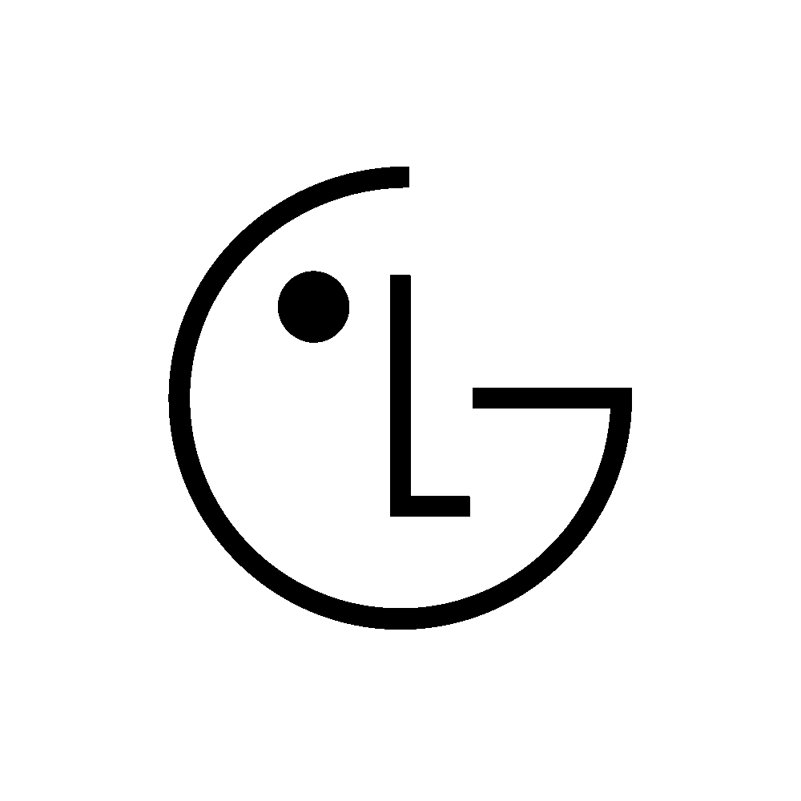

Dòng định danh sản phẩm
Câu mở đầu,
ngắn và cụ thể.
Mã sản phẩm · thông số chính
Một câu đỡ cho tiêu đề.
01 / 05
Nhãn mục
Tiêu đề mục,
hai dòng là đủ.
00đvTHAY: nhãn
00đvTHAY: nhãn
00đvTHAY: nhãn
Nguồn số liệu. Số nào chưa xác nhận thì ghi chưa xác định — không đoán.
02 / 05
Nhãn mục
Tiêu đề mục.
THAY: tên tính năng
Một dòng mô tả
THAY: tên tính năng
Một dòng mô tả
THAY: tên tính năng
Một dòng mô tả
THAY: tên tính năng
Một dòng mô tả
03 / 05
Nhãn mục
Lập luận chính.
Một câu giải thích.
THAY: cách cũ00
một dòng bất lợi
THAY: cách của LG00
một dòng lợi thế
04 / 05
Mã sản phẩm
Câu kết.
Một dòng chi tiết cuối.

THAY: ý thứ nhất
một dòng
THAY: ý thứ hai
một dòng
THAY: ý thứ ba
một dòng

05 / 05